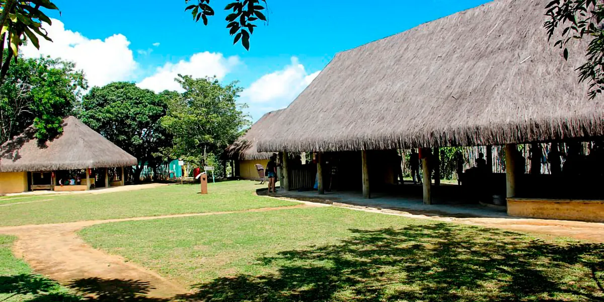

Memorial zumbi dos palmares
Identificação:
- Denominação/ ano da Construção: Memorial Zumbi dos Palmares/ 1990.
- Localização: Entre as Ruas 27, 16, 23-B, e 18- A, na Vila Santa Cecília.
- Época da construção: 1990.
- Proprietário: Prefeitura Municipal de Volta Redonda
- Uso atual/ Original: Centro Cultural.
Histórico:
Embora tenha nascido livre, foi capturado quando tinha por volta de sete anos de idade. Entregue a um padre católico, recebeu o batismo e ganhou o nome de Francisco. Aprendeu a língua portuguesa e a religião católica, chegando a ajudar o padre na celebração da missa. Porém, aos 15 anos de idade, voltou para viver no quilombo. Em 1680, com 25 anos de idade, Zumbi torna-se líder do quilombo dos Palmares, comandando a resistência contra as tropas do governo. Durante sua atuação a comunidade cresce e se fortalece, obtendo várias vitórias contra os soldados portugueses. O líder Zumbi mostra grande habilidade no planejamento e organização do quilombo, além de coragem e conhecimentos militares.
